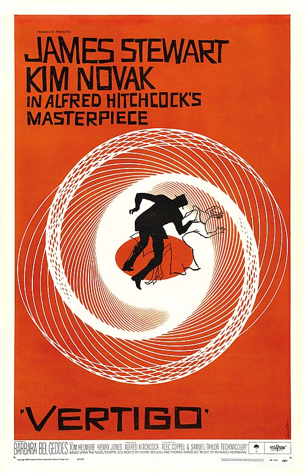

Español
English
Espectador Spectator
Mi obra completa es el camino de ida: lo que hago y le mando al mundo.
Esta página es el de vuelta: lo que el mundo me manda a mí y se queda. Películas, poetas, palabras, libros, personas, momentos del día.
Listas por orden de preferencia, que pueden cambiar.
My obra completa is the way out: what I make and send to the world.
This page is the way back in: what the world sends to me and stays. Films, poets, words, books, people, times of day.
Lists in order of preference, which may change.
Películas favoritas Favourite films
1
Origen Inception Christopher Nolan · 2010
2

Vértigo Vertigo Alfred Hitchcock · 1958
3
Pulp Fiction
Quentin Tarantino · 1994
Poetas Poets Toca un poeta para leer uno de sus poemas. Tap a poet to read one of their poems.
Palabras favoritas Favourite words A la derecha, una posible traducción al inglés. Tiene que ser una sola palabra. Spanish words, with a possible English translation on the right. One word each.
sabes you know eso that's it / exactly lit lit
Momento favorito del día Favourite time of day
Crepúsculo náutico Nautical twilight nautical twilight crepúsculo náutico Crepúsculo civil Civil twilight civil twilight crepúsculo civil Hora dorada Golden hour golden hour hora dorada
Ídolos de 2026 Idols of 2026
Marcos , amigo gallego del Siegfried Galician friend from Siegfried Miguel El teatro The theatre , personificado en Etienne, Miguel y Carla personified by Etienne, Miguel and Carla Jimbo , de los Scouts from the Scouts Alba
Lenguas que hablo Languages I speak
Español Spanish Inglés English Catalán Catalan Esperanto (lo chapurreo) (I get by) Francés French (lo chapurreo) (I get by)
Pósters y retratos vía Wikimedia. Posters and portraits via Wikimedia.
← Volver Back
Miguel Hernández · El rayo que no cesa (1936)
¿No cesará este rayo que me habita…?
¿No cesará este rayo que me habita
¿No cesará esta terca estalactita
Este rayo ni cesa ni se agota:
Esta obstinada piedra de mí brota
Blas de Otero · soneto sonnet
Me haces daño, Señor…
Me haces daño, Señor. Quita tu mano
Primeros versos. El soneto sigue protegido por derechos de autor, así que aquí va solo el comienzo. Opening lines. The sonnet is still under copyright, so only the beginning is quoted here.
Más sobre Blas de Otero → More about Blas de Otero →
Sylvia Plath · Ariel (1965)
Lady Lazarus
Dying
Morir
Un fragmento, con traducción verso a verso. El poema sigue protegido por derechos de autor, así que el texto entero está en el enlace. An excerpt with a line-by-line Spanish translation. The poem is still under copyright, so the full text is at the link.
Leer el poema entero (inglés) → Read the full poem →
Carmen Laforet · Nada (1945)
Nada
Me marchaba ahora sin haber conocido nada de lo que confusamente esperaba: la vida en su plenitud, la alegría, el interés profundo, el amor. De la casa de la calle de Aribau no me llevaba nada. Al menos, así creía yo entonces.
I was leaving now without having known any of what I had vaguely hoped for: life in its fullness, joy, deep interest, love. From the house on Aribau street I was taking nothing with me. At least, that is what I believed then.
Lucía Solla Sobral · Comerás flores (2023)
Comerás flores
El silencio en una casa es como dejarse el gas abierto.
Silence in a house is like leaving the gas on.
Sus enfados eran tan fuertes que rompían los míos.
His anger was so strong that it broke mine.
Pío Baroja · El árbol de la ciencia (1911)
El árbol de la ciencia
Pensaba que en la vida ni había ni podía haber justicia. La vida era una corriente tumultuosa e inconsciente donde los actores representaban una tragedia que no comprendían, y los hombres, llegados a un estado de intelectualidad, contemplaban la escena con una mirada compasiva y piadosa.
He thought that in life there was not, and could not be, justice. Life was a tumultuous, unconscious current in which the actors performed a tragedy they did not understand, and men who had reached a state of intellectuality watched the scene with a compassionate, merciful gaze.